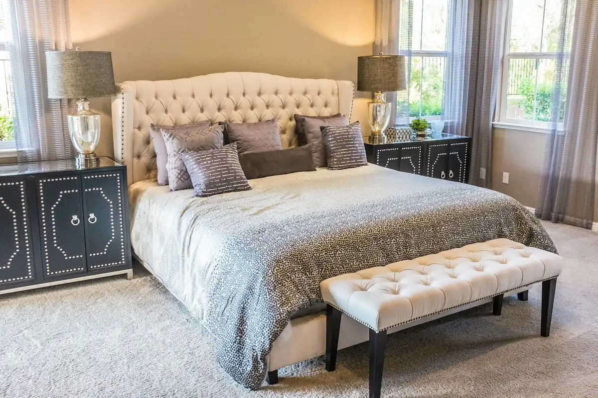

15 Small Bedroom Ideas for Renters on a Budget
These small bedroom ideas for renters on a budget prove that a tiny room can feel calm, organized, and personal without drilling, painting, or spending a fortune. Most of the 15 ideas below cost between $25 and $200, use no tools and no permanent changes, and move with you when your lease ends. If you want the room to feel larger as well as tidier, start with our guide to how to make a small room look bigger without painting, then pick two or three ideas from this list, live with them for a week, and add more only if you still need them.
15 Small Bedroom Ideas for Renters on a Budget
- Choose a bed frame with built-in storage. Your bed takes up the most floor space in the room, so make it work harder. A frame with drawers underneath or a lift-up base gives you room for out-of-season clothes, extra bedding, and shoes without adding another piece of furniture. Look for low-profile frames at IKEA, Target, Amazon, or Walmart, usually $120 to $200 for a full or queen size. Measure your room first and leave at least 24 inches of walking space on one side of the bed.
- Use the wall above your bed. The space above the headboard is often empty, but it is perfect for storage and style. Hang two floating shelves with adhesive strips or lean a narrow picture ledge against the wall for books, a small plant, and a framed print. Keep items light and low so nothing feels heavy over your head while you sleep. A pair of shelves and brackets usually costs $25 to $45.
- Swap a bulky nightstand for a floating shelf. A traditional nightstand can eat up 18 inches of floor space you do not have. A small floating shelf at mattress height holds your phone, a glass of water, and a book, and leaves the floor clear underneath. If you cannot drill, use a slim C-shaped side table that slides under the bed frame instead. Either option costs about $25 to $60 and instantly makes the room feel more open.
- Add under-bed bins you can actually reach. Under-bed storage only works if you can pull it out without moving the whole bed. Choose low, clear bins with handles or wheels, and label the front with masking tape so you know what is inside. Use one bin for extra sheets, one for winter sweaters, and one for shoes you do not wear every day. A set of two or three bins costs $25 to $40 at Target or Amazon.
- Stick to light colors and add one mirror. Light bedding, pale curtains, and white or light-wood furniture reflect light and make walls feel farther apart. You do not need to paint — your landlord will thank you — just keep the biggest surfaces light and add color with pillows and throws. Hang or lean a full-length mirror opposite a window to bounce natural light across the room. A leaning mirror costs $40 to $90 and also doubles as your outfit check.
- Pick furniture that does two jobs. In a small bedroom, every piece should earn its place. An ottoman with storage inside works as a seat, a footrest, and a place for blankets. A bench at the end of the bed can hold bags during the day and extra pillows at night. Look for storage ottomans for $35 to $80 and a simple bench for $60 to $120. If a piece only looks pretty and stores nothing, it probably does not belong in a small room.
- Use the back of your door. An over-the-door organizer is one of the best renter-friendly tools for a small bedroom. Hang one on the bedroom door or closet door for shoes, scarves, belts, jewelry, or hair tools. Choose a fabric organizer with clear pockets so you can see everything at a glance, and avoid metal hooks that can scratch the door. Most organizers cost $20 to $35 and take less than five minutes to hang.
- Try a bedside caddy for the small stuff. If you have no room for any nightstand at all, a bedside caddy is a simple fix. It slips between the mattress and the bed frame and has pockets for your phone, charger, glasses, and a book. It keeps essentials within reach without adding furniture to the floor. A fabric caddy costs $15 to $30, and it moves with you easily when you rearrange or move apartments.
- Hang curtains high and wide. Curtains hung just below the ceiling and a few inches wider than the window on each side make the window look larger and the ceiling look taller. Choose lightweight, light-colored curtains that let in daylight but still give you privacy at night. Use a tension rod inside the window frame or a no-drill adhesive rod if your lease does not allow screws. A pair of curtains and a rod usually costs $30 to $70.
- Layer your bedding instead of buying more furniture. A small bedroom feels cozy, not cluttered, when the bed looks intentional. Start with a fitted sheet and a light duvet or comforter, then add one throw blanket folded at the foot of the bed and two pillows you actually use. Keep extra blankets in your under-bed bin, not piled on a chair. A fresh duvet cover in a soft white, sage, or warm beige costs $30 to $60 and can change the whole feel of the room.
- Add a no-drill closet system. Many apartment closets have only one rod and one shelf, which wastes a lot of vertical space. Add a hanging shelf organizer with five or six cubbies for folded clothes, and a second hanging rod that clips onto the first to double your hanging space. Add slim, matching hangers so clothes do not slide off and take up less room. A hanging organizer and a second rod together cost about $30 to $55.
- Use a corner for a tiny desk or vanity. An empty corner can hold a small desk for working from home or getting ready in the morning. Choose a narrow desk, about 30 inches wide, with a small stool that tucks underneath when you are done. Add a small basket on the desk for chargers and makeup, and a wall-mounted organizer for papers. A compact desk and stool set costs $70 to $150 at IKEA or Walmart.
- Layer your lighting instead of relying on one ceiling light. One bright overhead light can make a small room feel harsh and flat. Add a small table lamp or a clip-on reading light by the bed, and a battery-powered LED strip or a plug-in floor lamp in a dark corner. Warm white bulbs, around 2700K, feel softer and more relaxing in the evening. A good bedside lamp costs $25 to $50, and a clip-on light costs $15 to $25.
- Keep a rolling cart for flexible storage. A three-tier rolling cart is one of the most useful pieces for a small bedroom because you can move it where you need it. Use it as a nightstand, a makeup station, a book cart, or extra storage for craft supplies and chargers. When guests come over, roll it into the closet and out of sight. A sturdy metal or plastic cart costs $35 to $65 at IKEA, Target, or Amazon.
- Keep one surface clear every day. The fastest way to make a small bedroom feel bigger is to keep one surface completely clear — your nightstand, your desk, or the top of your dresser. Take two minutes each night to put clothes in the hamper, return books to the shelf, and clear cups and chargers. This small habit prevents clutter from building up and makes the whole room feel calmer. It costs nothing, and it makes every other idea on this list work better.
How Do You Put Small Bedroom Ideas Together on a Budget?
Start with storage first, then fix lighting and bedding, and save big furniture for last. Under-bed bins, a closet organizer, and an over-the-door organizer clear clutter for about $80 total, which makes the biggest visual difference. Next, spend $50 to $100 on a lamp and fresh bedding, then look for a storage bed frame secondhand.
Check Facebook Marketplace, IKEA, Target, and Walmart for open-box or secondhand options. Measure your room, doorways, and closet before you order anything, and keep receipts so you can return pieces that do not fit your lease or your layout. For more deposit-safe ideas that work beyond the bedroom, see our small apartment decor ideas for renters on a budget, and compare bed frames in our guide to the best small space furniture for studio apartments under $200.
Frequently Asked Questions
What is the best way to make a small bedroom feel bigger without painting?
The small bedroom ideas that work fastest are simple: light colors, clear floors, and good lighting. Keep bedding and curtains light, add a mirror opposite a window, and use floating shelves or a bedside caddy instead of bulky furniture. Keeping one surface clear every day also helps the room feel larger, even without any changes to the walls.
How can I add storage to a small rental bedroom without drilling?
Use renter-friendly storage that needs no screws or holes. Under-bed bins, over-the-door organizers, hanging closet shelves, tension rods, adhesive hooks, and rolling carts all add storage without damaging walls. Always check your lease for rules about adhesive hooks, and use removable strips that are rated for the weight you plan to hang.
What size bed works best in a small bedroom?
It depends on your room size and how you live in it. A full-size bed often works better than a queen in a room under 120 square feet because it leaves room for a nightstand and walking space. If you share the bed, a queen with a storage frame may be worth the trade-off. Measure your room and tape out the bed size on the floor with painter's tape before you buy.
How much does it cost to decorate a small rental bedroom on a budget?
Most renters can transform a small bedroom for $150 to $300, spread over a few weeks. Start with about $80 of storage — under-bed bins, a closet organizer, and an over-the-door organizer — then add $50 to $100 of lighting and bedding. Save larger pieces like a storage bed frame for last, and check secondhand listings first to stretch your budget further.
Can I hang shelves in a rental bedroom without drilling?
Yes, if you keep them light. Use removable adhesive strips rated for the shelf and its contents, or choose a leaning picture ledge that rests against the wall instead of hanging from it. Avoid heavy wood shelves and books on adhesive mounts. Always test the strips in a hidden spot first, and check your lease for any rules about adhesive products.